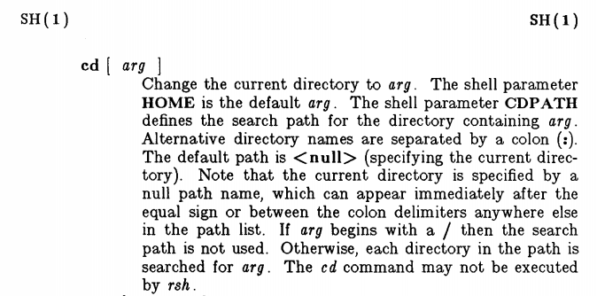

CDPATH2020-05-30
Let’s say we have a directory somewhere that we access often; maybe the directory that contains all our projects, or the parent directory of a bunch of services. And that directory has an annoyingly long path, potentially buried deep in some GOPATH, for example. To get there, we have to type something like
cd ~/go/src/github.com/bewuethr/awesome-projectevery time. Unacceptable, right?
We can use an alias! That’s what I did for a long time. I added
alias cdap='cd "$HOME/go/src/github.com/bewuethr/awesome-project"'to my ~/.bashrc1, and was able to navigate like
$ cdap
$ pwd
/home/benjamin/go/src/github.com/bewuethr/awesome-project
$ ls
bar baz foo go.mod go.sum
$ cd bar
$ pwd
/home/benjamin/go/src/github.com/bewuethr/awesome-project/barGreat!
CDPATHI almost always want to access a subdirectory of awesome-project, rarely the directory itself. Bash (or any POSIX conformant shell) has a shell variable called CDPATH: a colon-separated list of directories for cd to use as a search path.
So, instead of my alias, I’d stick this into my .bashrc:
export CDPATH='/home/benjamin/go/src/github.com/bewuethr/awesome-project'Now, from anywhere in my file system, I can just do this:
$ pwd
/path/to/some/random/directory
$ cd foo
/home/benjamin/go/src/github.com/bewuethr/awesome-project/fooAnd sure enough, Bash even helpfully tells me that it took me there! Excellent.
Or is it? Let’s assume I want to change into a directory foo within that random directory:
$ pwd
/path/to/some/random/directory
$ ls
errcheck foo lint vet
$ cd foo
/home/benjamin/go/src/github.com/bewuethr/awesome-project/fooThat took me to the foo from CDPATH! Definitely not what I wanted. I could do this instead:
$ cd ./foo
$ pwd
/path/to/some/random/directory/fooBut in reality, that’d more likely look like
$ cd foo # Oops, uses CDPATH!
/home/benjamin/go/src/github.com/bewuethr/awesome-project/foo
$ cd - # Go to previous directory...
/path/to/some/random/directory
$ cd ./foo # Be explicit with ./and gone is any advantage CDPATH would have had over an alias. It tried using it like this for a while, but it got too annoying and I gave up, went back to my alias.
CDPATH done rightUntil one day, I really wanted to figure out if there isn’t a better way. I took a closer look at the Bash manual; from the description of the cd builtin:
If the shell variable
CDPATHexists, it is used as a search path: each directory name inCDPATHis searched for directory, with alternative directory names inCDPATHseparated by a colon (:).
And a bit later:
If a non-empty directory name from
CDPATHis used, or if-is the first argument, and the directory change is successful, the absolute pathname of the new working directory is written to the standard output.
That was the first hint: “non-empty directory name”!
In the POSIX spec for cd, we can read this:
Starting with the first pathname in the <colon>-separated pathnames of CDPATH […] if the pathname is null, test if the concatenation of dot, a <slash> character, and the operand names a directory.
Even more explicit. A null pathname in CDPATH is replaced with ./, which is exactly what I want. The fix is really a one character change:
export CDPATH=':/home/benjamin/go/src/github.com/bewuethr/awesome-project'
# └── this one!This prepends a null directory to CDPATH.
Now I can do this:
$ pwd
/path/to/some/random/directory
$ ls
errcheck foo lint vet
$ cd foo # Does cd ./foo
$ pwd
/path/to/some/random/directory/foo
$ ls
foo.go
$ cd foo # Uses non-null CDPATH path
/home/benjamin/go/src/github.com/bewuethr/awesome-project/fooMuch better!
As the POSIX spec tells us, CDPATH has been around since the System V shell. And indeed, the manual for System V Release 3.5 has this to say:

A nice side effect when using the (pretty standard) bash-completion package is that it is fully CDPATH aware (see the implementation of _cd), so I can do
$ pwd
/home/benjamin/.vim
$ ls
after autoload bundle colors ftdetect
$ cd f<tab>
foo/ ftdetect/and get both local and CDPATH directories.
Really to a separate file sourced from my ~/.bashrc, but I’m getting ahead of myself. The post about my (perfect) dotfile setup is still in the making.↩︎